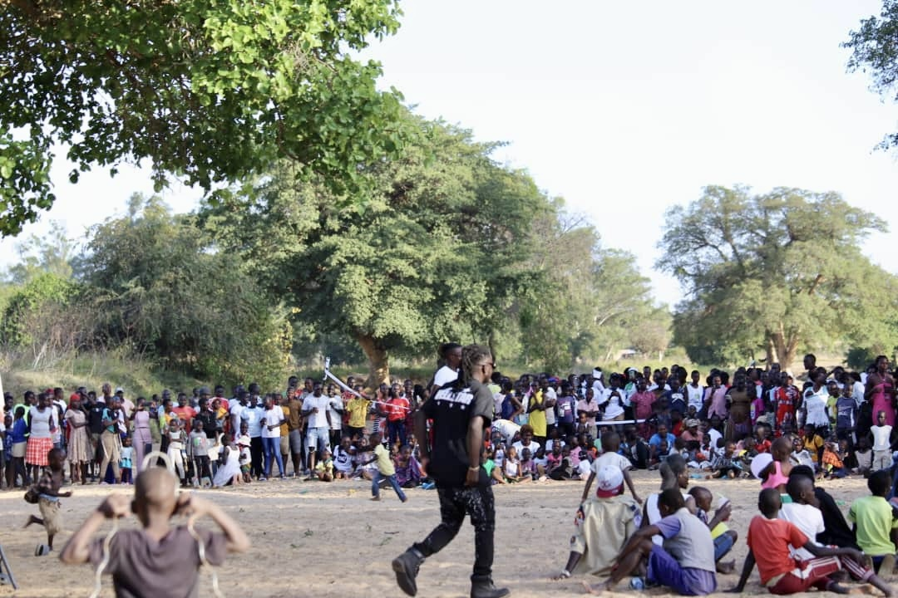
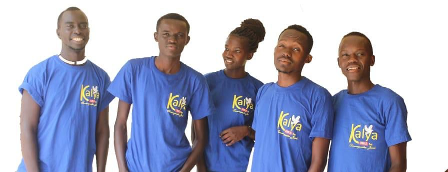
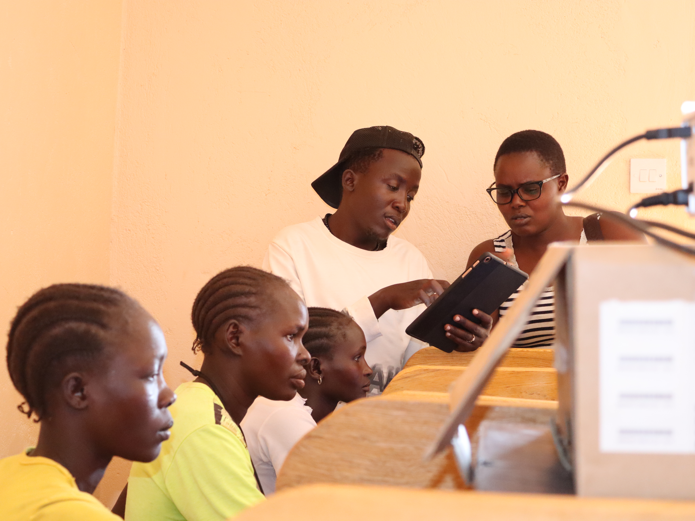
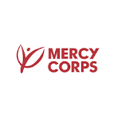
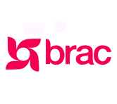
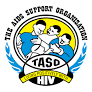
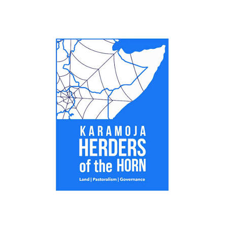
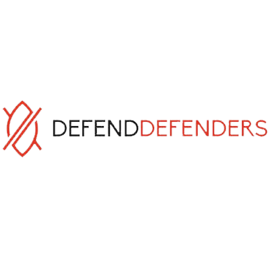

Our Major Projects

Youth Empowerment Program
Training young people in entrepreneurship, leadership, and digital literacy to prepare them for real-world opportunities.
Support Project
Community Health Initiative
Raising awareness about health, hygiene, and sanitation through Kalya FM operates within CSYDI offices, supporting radio talk shows, sensitization, and dissemination of relevant information.
Get Involved
Youth Tech & Innovation Lab
A modern digital hub empowering youth with technical skills, mentorship, and tools to innovate solutions for community challenges.
Join the MovementOur Major Partners

Mercy Corps
Years: 2021 – 2023
Terms of Collaboration: Mercy Corps funded CSYDI to implement a 3-year project titled “Girls Improving Resilience through Livelihoods and Health (GIRLH)” among the Pokot of Amudat District.
Project: Girls Improving Resilience through Livelihoods and Health (GIRLH)

BRAC
Years: 2019 – 2020
Terms of Collaboration: CSYDI implemented a youth skilling project with BRAC among the Pokot/Amudat community.
Project: Youth Skilling among the Pokot/Amudat Community

TASO (The AIDS Support Organisation)
Years: 2021 – 2022
Terms of Collaboration: TASO funded CSYDI to implement an HIV/AIDS prevention project among the Pokot of Amudat District.
Project: HIV/AIDS Prevention Project among the Pokot of Amudat District

Kalya FM
Years: 2019 – Present
Terms of Collaboration: Partnership focuses on cost-effectiveness to reduce cross-border communication costs. Kalya FM operates within CSYDI offices, supporting radio talk shows, sensitization, and dissemination of relevant information.
Project: Information Dissemination & Sensitization through Radio

Center for Conflict Resolution (CECORE)
Years: 2021 – 2022
Terms of Collaboration: CECORE worked with CSYDI to implement a peace project in Amudat District, focusing on engagement with Youth Peace Champions.
Project: Youth Peace Champions Initiative

Karamoja Harders of the Horn(KHH)
Years: 2024 – 2025
Terms of Collaboration: Strengthening Peace, Gender Equality, and Climate Resilience through cross-Border Collaboration.
Project: Strengthening Local CSOs capacities in Peace, Gender Equality, and Climate Resilience through Cross-Border Collaboration.

DefendDefenders
Years: 2023 – Recent
Terms of Collaboration: DefendDefenders built our capacities in protecting human rights. Building on the physical & digital security, CSYDI was selected for the next level of skills development as Trainers of Trainees(TOT). Designed to strengthen our capacity to serve as trainer in physical & digital security management and to support organizations effectively responding to and mitigating risks.
Project: Capacity Building
Ongoing Projects
-
Youth Empowerment Program
Workshops and mentorship to develop self-sustaining young leaders and entrepreneurs.
-
DefendDefenders
Building Capacities in protecting human rights, physical & digital security
-
School Supplies Drive
Providing educational materials to children from vulnerable families.
Completed Projects
-
Solar Library
Established a solar-powered reading space for rural students.
-
Clean Water Pilot
Restored clean water sources through borehole repair and filtration.
-
Digital Skills Bootcamp
Trained 120 youth in basic IT and online entrepreneurship.
Upcoming Projects
-
Youth Farming Initiative
Empowering youth through agribusiness training and cooperative farming.
-
Mental Health Outreach
Raising awareness on emotional wellbeing and support systems.
-
MakerSpace Build
Building an innovation space for young inventors and creators.